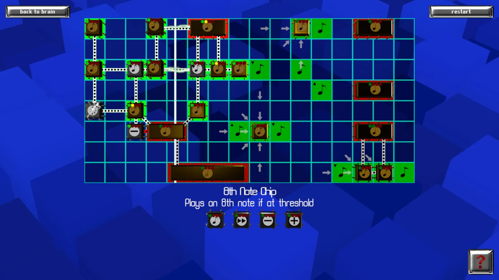

001 Holo-Horizon · loop AZ2 · channel 3
Nurbits
Each chip is a neuron with a firing threshold. Wire enough signal into one and it fires; wire too much and it dies. Solve the loop by making every green cell play its note on the beat.
Sound on · drag chips from the tray · press ? in game for how chips work
The still above is a frame of the original 2017 Unity build — the reference this port is measured against. Press play to load the recreation.
starting…
Recreation of one level · original by Cogent Education, 2017 · Steam